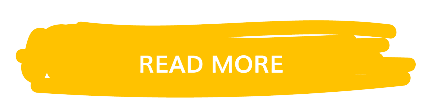

Lionel Messi
Lionel Messi, (born June 24, 1987, Rosario, Arg.), Argentine-born football (soccer) player. After making his formal debut with FC Barcelona during the 2004–05 season, he emerged as one of the game’s dominant players, known for his prolific goal scoring and precise ball control. Messi received an unprecedented three consecutive FIFA world player of the year awards (2009–11). In international competition he helped Argentina win a gold medal at the Beijing Olympics in 2008.
